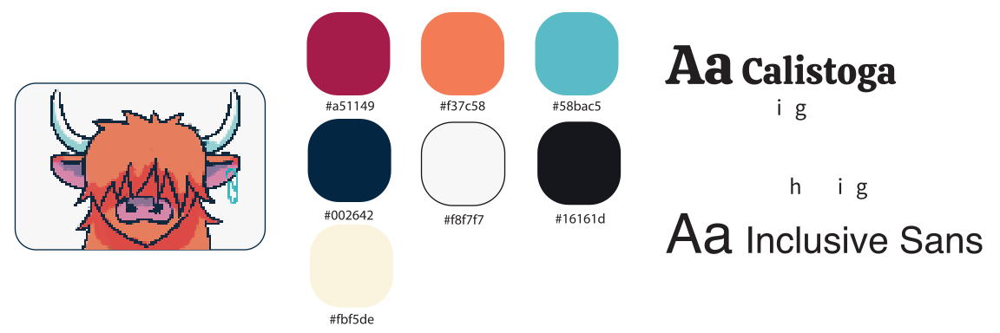
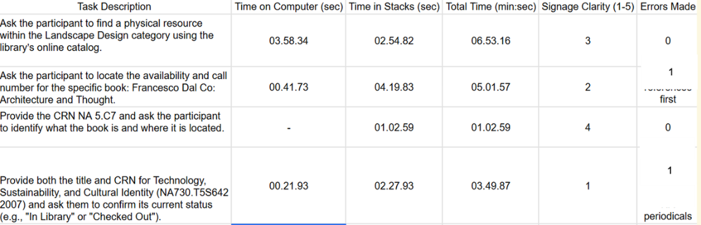
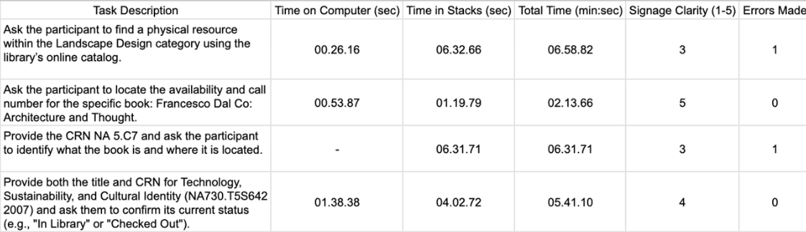
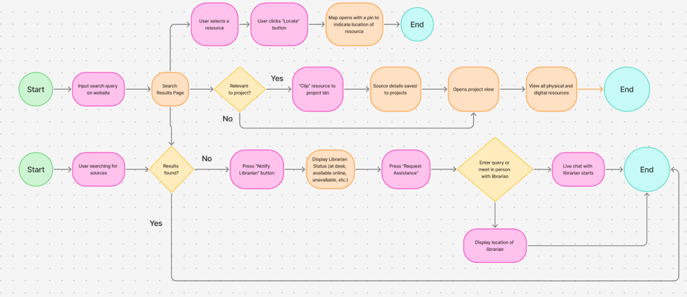
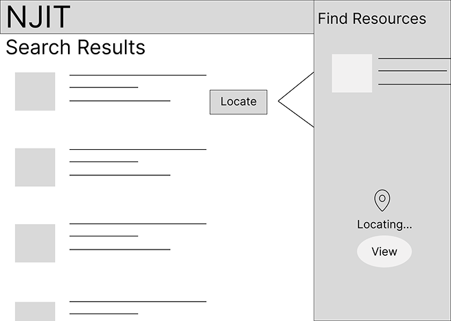
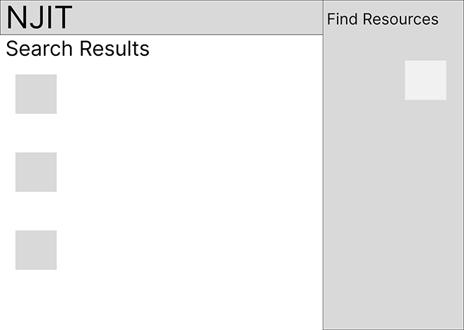
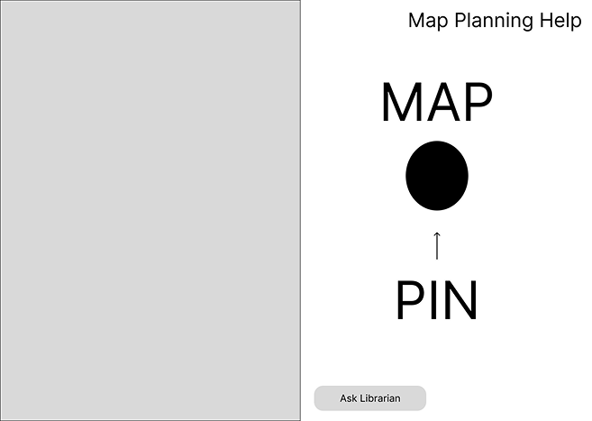
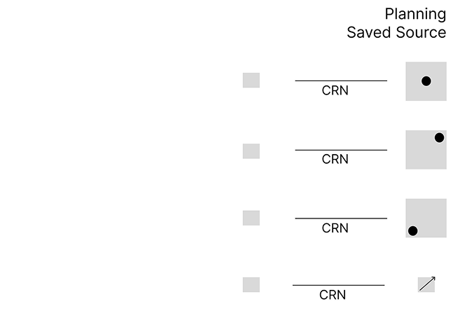
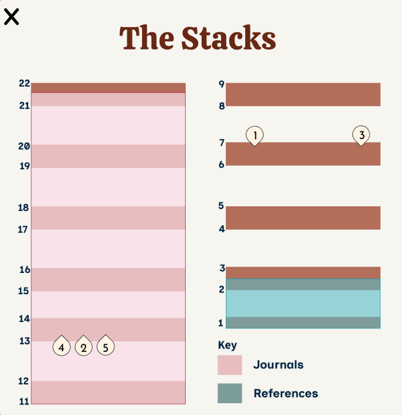
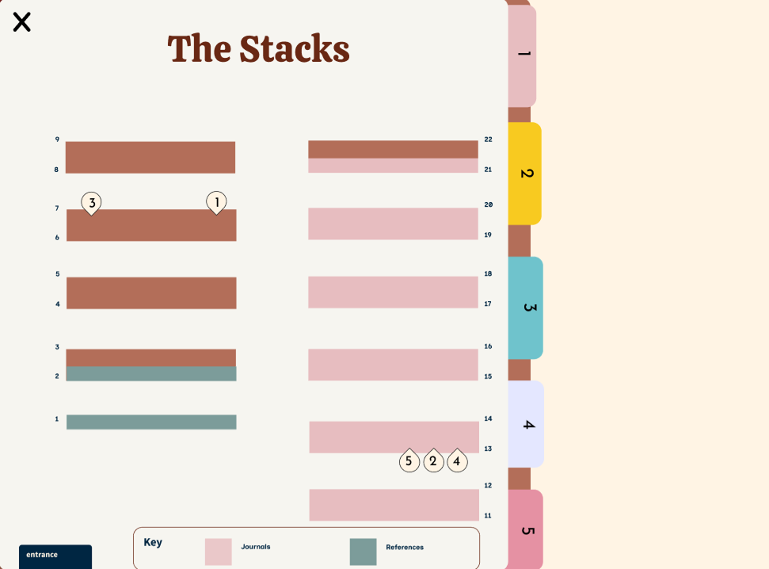

Case Study
The Littman Library was designed for all students and faculty members to use. However, not every student and faculty member uses it. It is intended to provide assistance for all research-level needs.
Students often seek librarian assistance for resources at the last minute, but current systems do not accommodate this urgency. A lack of proactive discovery tools leads to wasted time, high student stress, and missed assignment deadlines.
Comparing the research management software tools including Zotero and Mendeley, considering usability, features, accessibility, navigation, branding, and user experience as a whole. Zotero and Mendeley are both intended at students and researchers and offer citation and organizing tools for free. Zotero is better in terms of the easy process of work and browser compatibility, whereas Mendeley provides more advanced research-oriented AI features and looks more professional. The similarities between Zotero and Mendeley include the well-organized interface, citations, and functionalities oriented at students and academics.

48.9% Hillier College of Architecture and Design (HCAD) students prefer using the Littman Library.
To identify the specific breakdown between digital search and physical retrieval, we compiled a series of tasks for students to complete at the Littman Library. They were tasked with locating books given a general category, a specific title, call number (CRN) only, and a specific title and CRN. The following friction points are identified:


The contextual inquiry measured how efficiently participants could locate books and navigate the library system by tracking computer search time, time spent in the stacks, total completion time, signage clarity ratings, and errors made. Overall, participants completed simple catalog lookup tasks faster than physical navigation tasks, suggesting that locating materials within the library stacks created the greatest usability challenges. Lower signage clarity scores and repeated navigation errors, especially when identifying call numbers and locating periodicals, indicated confusion with the library’s searching system. Participant 2 generally completed digital search tasks more efficiently, while both participants struggled more with physical resource discovery, highlighting opportunities to improve signage, shelf labeling, and guidance for first-time users.





To evaluate the usability of our prototype, we compiled a series of tasks for students to complete using Clip-Coo at the Littman Library:
These tests allowed us to see our main features in action and identify any potential challenges in navigating the library alongside our prototype. Some of our biggest takeaways from our user testing were that we needed to modify the map of the stacks to make it more readable for users and include a call number breakdown on the Projects page.
We had a total of 6 participants test our prototype. The usability test revealed that participants found the overall concept valuable and the project management features easy to use. Main issues were with navigating the library and understanding call numbers, not the basic tasks themselves. So, improving the maps and giving clearer directions on how to find things would make the whole experience way better for users.

The stacks were mapped out by taking a tour, since, legally, it couldn't be provided by NJIT staff. It is divided into three colors, which represent journals, references, and regular books.

Since some participants struggled during the usability test, the stacks page was refined. This time, we converted the stacks and made the saved resource into a folder feature, where users can click and learn more about the resource and how to locate it based on the call number.
My participation in this project allowed me to develop my design thinking and also to learn to solve problems through the users' eyes. During the whole process, NJIT UX design professors and UX design experts gave our team so much insightful feedback that it not only challenged our assumptions but also allowed us to make more informed decisions. I was able to improve my skills in the communication of design concepts, taking criticism, and working with others during my one of my first UI/UX design project. The success of the project as well as the personal development I have achieved through working on this project (for example, having completed many parts of it from beginning to end) are my two main takeaway points. The experience gained from this project will have a positive effect on my future work in UI/UX design as I continue to apply all I have learned through this project regarding constructive collaboration and design principles.